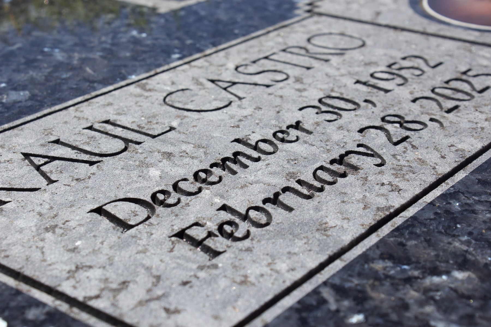
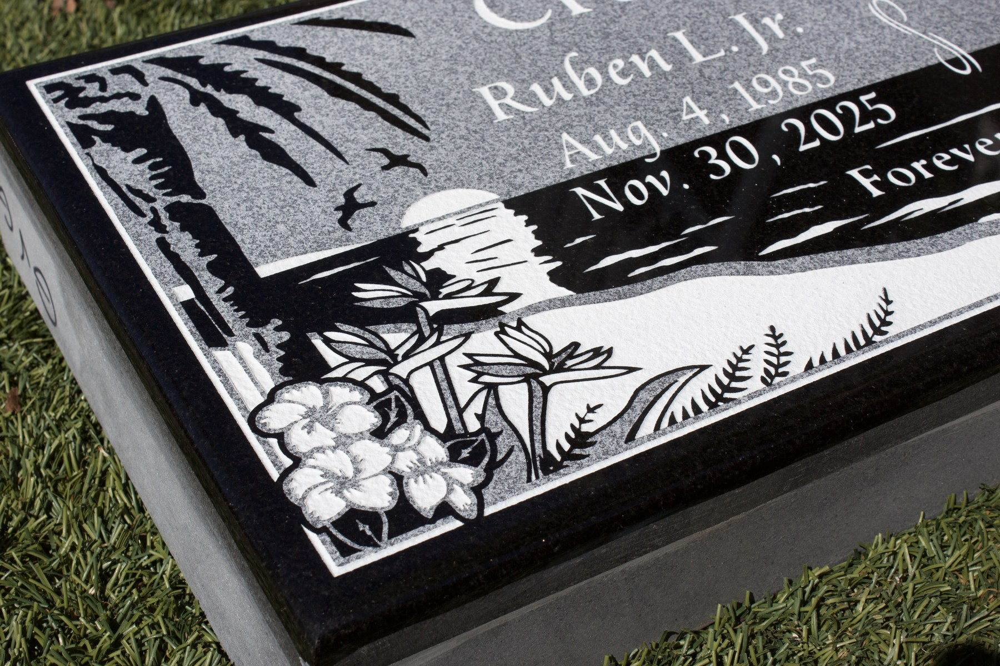
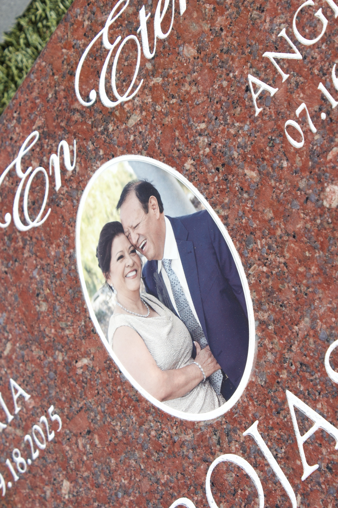
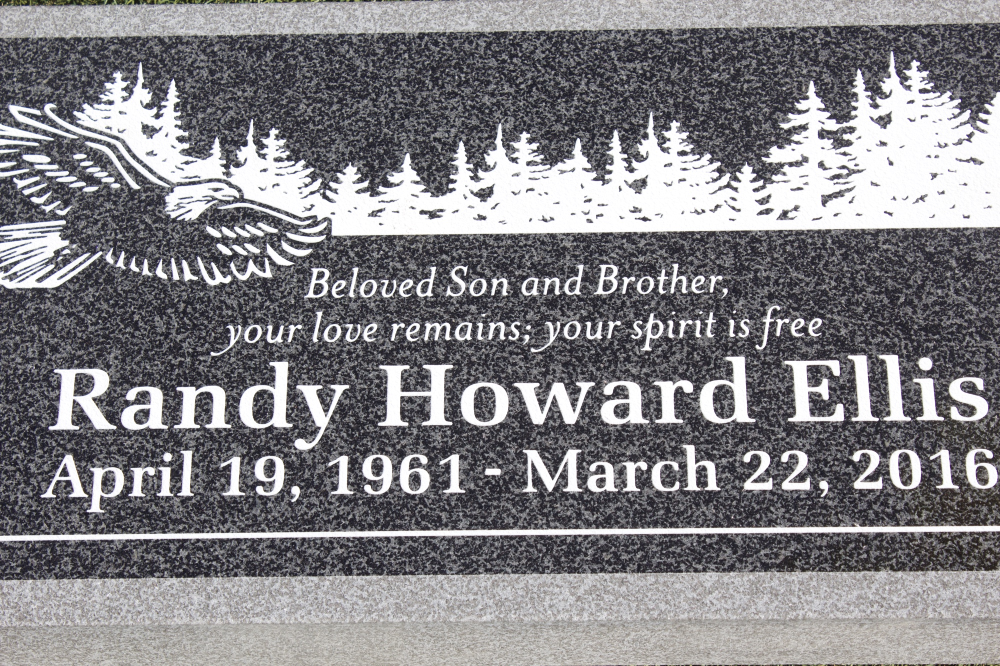

Custom headstones, grave markers, bronze memorials, and monuments, planned with patience, clarity, and lasting craftsmanship.
Family-owned in Oxnard
20+ years of experience
English, Spanish and Multi-Lingual support
Custom Headstones
Cemetery Memorials
Family Guidance
Local Care
First Decisions
Made Manageable From the Start
We help you understand cemetery requirements, compare memorial styles, review wording and proofs, and move at a pace your family can handle.
Design guidance
Layout proofs
Cemetery coordination
Memorial Options
Choose a Memorial That Lasts
Upright Monuments
Traditional granite memorials with scale, presence, and permanence.
Flat Grave Markers
Low-profile granite and bronze markers made to meet cemetery requirements.
Bronze Memorials
Bronze plaques with refined lettering, emblems, portraits, and borders.
Benches & Custom Designs
Benches, custom forms, and personal stonework for a more specific tribute.
Completed Memorials
Crafted With Care




Our Process
From First Call to Finished Stone
- Listen Family wishes, cemetery details, and timing.
- Design Wording, stone, artwork, and proof review.
- Coordinate Cemetery rules and setting requirements confirmed.
- Craft Approved proofs made into lasting stonework.
Quiet Craft
Crafted with patience. Made to hold memory for generations.
Before Production
Details Checked Before Stonework Begins
Proof reviewed before production
Names and dates checked carefully
Updates without pressure
Stonework made to endure
Ventura County Cemeteries
Local Details, Checked Early
Each cemetery has its own requirements. Size, material, placement, and setting details are confirmed before your memorial moves into production.
Ask About Your CemeteryBefore You Visit
What To Bring, If You Have It
Cemetery Information
Cemetery name and section, if you have them. We can confirm size, material, and placement requirements.
Memorial Style
Flat marker, upright monument, bronze plaque, bench, or custom design.
Names & Wording
Names, dates, spelling, artwork, symbols, and wording your family wants reviewed.
What You Have
Bring paperwork, photos, notes, or questions. If something is missing, we can still begin.
Common Questions
Questions Families Ask First
Practical answers before your family decides on a headstone, marker, or monument.
Do I need to know the memorial style before reaching out?
No. The first conversation can narrow the choices and show what fits your cemetery, budget, and family wishes.
Can you review an existing memorial or added lettering?
Yes. Send a clear photo and the cemetery name. We can review the stone, existing lettering, and cemetery requirements, then explain whether added lettering, repair, refinishing, or replacement is appropriate.
What affects the cost of a headstone or marker?
Cost depends on the memorial type, granite, size, finish, lettering, artwork, and cemetery requirements. Once we know the cemetery and what your family has in mind, we can explain the options and prepare a clear quote.
How long does a headstone or marker take?
Timing depends on cemetery approval, stone choice, artwork, and production schedule. Once those details are known, we explain what can affect the timeline.
Personal Guidance
Tell Us What You Have
You do not need every detail ready. Share the cemetery name, a question, or the memorial style you are considering, and we will help you understand what comes next.
623 S A St, Oxnard, CA 93030
Get Directions
Office hours
Monday-Friday 10 AM-6 PM
Saturday 12-3 PM
Sunday closed
Schedule a visit
One-hour design meeting